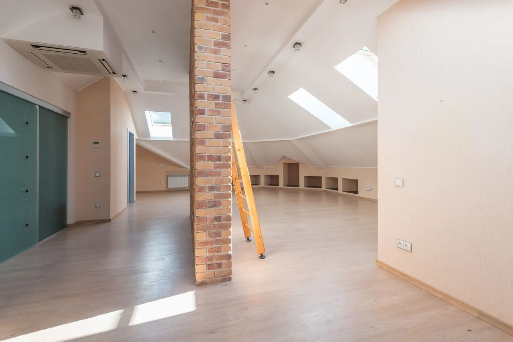
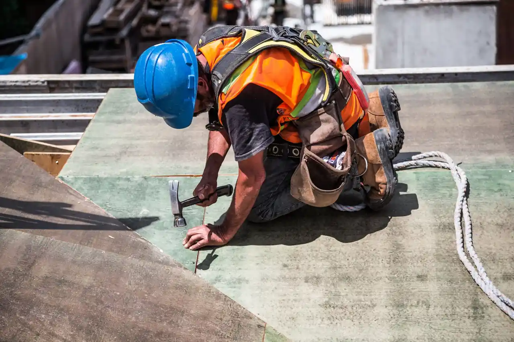

Focused arrival windows
Useful updates and clear arrival timing.

Roofing in Bayside is essential for maintaining the safety and integrity of your home. As a leading roof contractor in Bayside, we provide top-notch roofing services tailored to the local climate and building styles.
Useful updates and clear arrival timing.
Review the approach and price before deciding.
Equipped vehicles and respectful cleanup.
Neighbors serving neighbors with follow-through.
Roofing in Bayside is a crucial service that ensures homes remain protected against the elements. Our roof contractor in Bayside has been serving the community for over 15 years, providing quality roofing solutions tailored to the unique needs of local residents. With a focus on both residential and commercial properties, we understand the specific challenges posed by the Bayside climate, including high humidity and seasonal storms. Our commitment to using top-quality materials and skilled craftsmanship has made us a trusted choice for roofing services in Bayside.

Bayside experiences a high demand for roofing services due to its coastal location. Homeowners often seek roofing solutions that can withstand the local weather conditions. Our roof contractor in Bayside offers a variety of services to meet these needs, including 24/7 roofing services in Bayside.
Our roof installation services in Bayside focus on using durable materials that can withstand the coastal climate. We cater to both residential and commercial properties, ensuring each installation meets local building codes.
View service →02Roof replacement in Bayside is crucial for homes with aging roofs. We assess the condition of your roof and provide high-quality replacements that enhance your home's value and safety.
View service →03Our roof repair services in Bayside address common issues like leaks and missing shingles. We provide fast and reliable repairs to keep your home protected from the elements.
View service →04Regular roof inspections in Bayside help identify potential problems before they escalate. Our team conducts thorough inspections to ensure your roof remains in optimal condition.
View service →05Roof maintenance in Bayside is essential for prolonging the lifespan of your roof. Our preventative plans include routine checks and maintenance to keep your roof in top shape.
View service →06Our flat roofing services in Bayside are designed for commercial buildings and modern homes. We use high-quality materials to ensure durability and effective drainage.
View service →07Shingle roofing services in Bayside provide a classic look with modern durability. We offer a range of styles and colors to match your home's aesthetic.
View service →08Tile roofing services in Bayside are ideal for homeowners looking for a durable and stylish option. Our team ensures proper installation for optimal performance.
View service →09Metal roofing services in Bayside offer longevity and energy efficiency. We specialize in installing metal roofs that withstand the harshest weather conditions.
View service →Roofing services in Bayside are executed with a keen understanding of local building codes and climate conditions. Our roof contractor in Bayside ensures compliance with the Florida Building Code, specializing in materials suited for high humidity and storm-prone areas. We prioritize safety and efficiency, scheduling jobs to minimize disruption and ensuring proper access to each site. Our team is equipped with the right tools, including roofing nailers and safety harnesses, to deliver quality workmanship.
High humidity can lead to faster deterioration of roofing materials, increasing the need for repairs and replacements. We recommend materials designed for high humidity, such as metal roofing and asphalt shingles, to ensure longevity.
Storms can lead to missing shingles and leaks, necessitating prompt repairs to prevent further damage. Our emergency roof repair services in Bayside are available 24/7 to address storm-related issues quickly.
Compliance with local codes is essential to avoid penalties and ensure safety. Our team is well-versed in Florida's building codes, ensuring all roofing work meets regulatory standards.
This code governs all construction and roofing work in Florida, ensuring safety and durability in our services.
Following NRCA guidelines ensures that our roofing installations meet industry standards for quality and performance.
Bayside's climate and coastal location contribute to several common roofing issues. High humidity and frequent storms can lead to problems such as leaks and mold growth. Our roof contractor in Bayside is equipped to handle these challenges effectively.
Frequent storms can damage roofing materials, leading to leaks that require immediate attention. We offer 24/7 emergency roof repairs to address leaks promptly and prevent further damage.
Bayside's humid climate fosters moss growth, which can trap moisture and deteriorate roofing materials. Our moss removal services ensure roofs are clean and protected from further damage.
Strong winds can dislodge shingles, exposing the roof to leaks and other issues. We conduct thorough inspections and prompt repairs to replace missing shingles and restore protection.
Inadequate ventilation can lead to overheating and damage to roofing materials, especially in summer. We assess ventilation systems and provide solutions to improve airflow and reduce heat buildup.

Roofing costs in Bayside vary based on materials, roof size, and complexity. Typical 2026 pricing ranges from $3,500 to $15,000 for full roof replacements. Factors such as the type of roofing material chosen and any additional features like skylights or ventilation systems can influence overall costs. Additionally, local building codes may require specific materials, which can also affect pricing. Our roof contractor in Bayside provides transparent estimates to help homeowners budget accordingly.
Different materials, such as asphalt shingles or metal, have varying costs and durability. Choosing the right material impacts both initial costs and long-term maintenance.
Larger roofs or those with unique designs may incur higher labor costs and require more materials, affecting overall pricing.
Compliance with local codes can necessitate specific materials or installation techniques, influencing the final cost of roofing projects.
Navigating Bayside is easy thanks to familiar landmarks that help orient our team. We often use the Bayside Park Community Center as a reference point for service calls, ensuring timely arrivals. Our familiarity with local routes and traffic patterns allows us to provide efficient service to all areas of Bayside.
This community center is a central hub in Bayside, making it a key landmark for our service routes.
The Bayside Marina is a popular spot, and we often service homes nearby that are affected by marine conditions.
This shopping plaza is a well-known location where many homeowners seek roofing consultations.
We often work with families in this area, providing roofing services for homes near the school.
This park is a popular gathering place, and we serve many homes in the surrounding neighborhoods.
The sports complex is a community focal point, and we frequently provide roofing services to nearby residences.
This area features numerous commercial properties that require regular roofing maintenance and inspections.
The retail center attracts many customers, and we provide roofing services for the businesses located here.
Easily accessible from Bayside, allowing quick travel to service appointments.
Located just a short drive from our office, facilitating efficient service delivery.
We proudly serve several neighborhoods in Bayside, providing tailored roofing solutions to meet the unique needs of each community. Our team is familiar with the local architecture and roofing requirements.
Bayside Park features a variety of homes that require regular roofing maintenance due to the coastal climate. Our team is experienced in addressing the specific needs of this neighborhood. Located just a few minutes from our main office, we can respond quickly to any roofing needs.
Bayside Estates has many older homes that may need roof replacements. We specialize in providing affordable roofing in Bayside to meet the budget of homeowners. Our team frequently works in this area, ensuring timely service.
Bayside Shores is known for its beautiful waterfront homes, which often require specialized roofing services to withstand the elements. We are familiar with the unique challenges of this neighborhood and can respond promptly.
Bayside Heights features modern homes that benefit from energy-efficient roofing solutions. Our team provides consultations to help homeowners choose the best materials. Located nearby, we can easily schedule inspections and installations.
Our work in Bayside has led to numerous successful projects, showcasing our expertise in addressing local roofing challenges.
Severe storm damage leading to leaks We provided emergency roof repairs to a home in Bayside Park, replacing damaged shingles and sealing leaks. The homeowner reported no further issues, and the repairs were completed within 24 hours.
Aging roof needing replacement In Bayside Estates, we replaced an aging asphalt shingle roof with a new, durable metal roof. The new roof improved energy efficiency by 20%, saving the homeowner on utility bills.
Moss growth causing deterioration We removed moss and treated the roof of a home in Bayside Shores, preventing further damage. The homeowner was pleased with the improved appearance and extended roof life.
Bayside's climate impacts roofing needs throughout the year. Understanding seasonal challenges can help homeowners maintain their roofs effectively. Our roof contractor in Bayside offers tailored services to address these seasonal considerations.
Spring brings increased rainfall, which can lead to leaks if roofs are not properly maintained.
Summer heat can cause roofing materials to expand and contract, leading to wear and tear.
Fall leaves can clog gutters, leading to water damage and roof leaks.
Winter storms can cause significant damage to roofs, especially if snow accumulates.
From Bayside, we extend our roofing services to several nearby cities, ensuring comprehensive coverage for our clients. Our team is familiar with the unique roofing needs of each location.

Just a short drive from Bayside, we frequently serve customers in St. Andrews.
Local coverage and detailsLocated nearby, we often receive requests for roofing services from Downtown Panama City residents.
Local coverage and details
Millville is a short distance away, and we provide roofing solutions for its residents.
Local coverage and details
We regularly service homes in Downtown North, just a quick trip from Bayside.
Local coverage and detailsChoosing the right roofing contractor is crucial for your home. Asking the right questions can help you identify qualified professionals. Here are some key questions to consider.
Experience with local conditions ensures the contractor understands specific challenges and requirements.
Licensing and insurance protect you from liability and ensure compliance with local regulations.
References give insight into the contractor's reliability and quality of work.
Warranties provide peace of mind and protect your investment in roofing services.
Understanding their approach to problem-solving can indicate their professionalism and transparency.
Lic. #FL123456
Lic. #FL654321
GAF
CertainTeed
$2M general liability
Member
Sponsor
The best roofing services in Bayside include roof installation, repair, and maintenance, tailored to local climate conditions.
Roofing costs in Bayside typically range from $3,500 to $15,000, depending on materials and roof size.
Look for experience, licensing, insurance, and positive customer reviews when choosing a roofing contractor in Bayside.
It's advisable to inspect your roof at least twice a year and after severe weather events to catch potential issues early.
Durable materials like metal and asphalt shingles are ideal for Bayside due to their ability to withstand humidity and storms.
Not seeing your question? Our local team can help you understand urgency, scheduling and what to expect.
Ask the local teamWe invite you to reach out for any roofing needs. Our team is available to assist you promptly, ensuring a quick response.